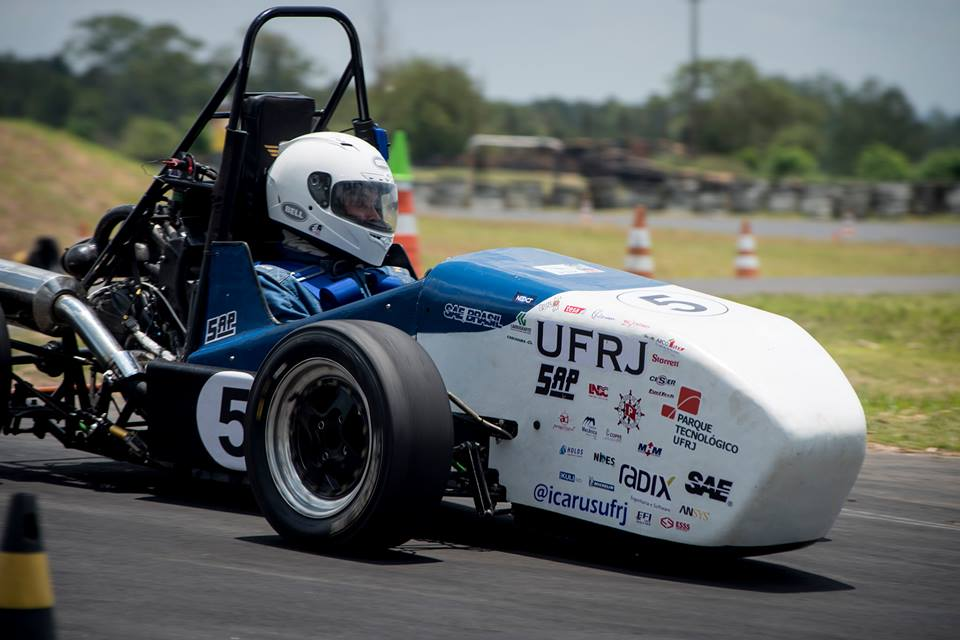
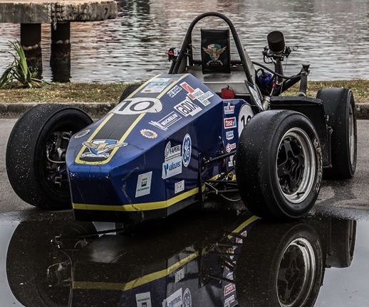
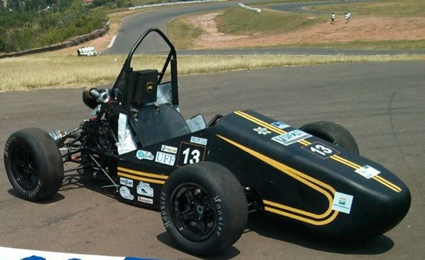

-
2016
On the 2016 year i worked as steering leader at Ícarus UFRJ Formula SAE team developing a new coupling using a spline axis and ASME Standard beyond this, developed a new steering wheel using 3d printing for ergonomics and laser on the structure, this steering wheel had a screen and used a raspberry pi to show engine telemetry and brake pressure/balance facilitating brake and enginge calibration and providing information about the car to the driver. -
2015
 2015 was my first year on the Icarus UFRJ Formula SAE team, at this year i acted on the manufacturing of the suspension components like wishbones and pushrods and the fabrication of the new steering box. At this year i stardet to study the Adams car software for vehicle dynamics simulation and was used for transmission scaling and is actualy used by the team for suspension geometry design. On 2015 i started mya one year contract as apprentice on administrative work on Amil Saúde, a company that today is member of the United Health Group. My work was to organize and control the hospitals and doctors requests for cirurgical equipement, the requests came mostly by e-mail (using outlook as interface) and by phone, then using excel to organize the flow and requests status for the right routing to the nurses analysts. By using excel i could avoid rework and made the flow much more efficient.
On 2015 i started mya one year contract as apprentice on administrative work on Amil Saúde, a company that today is member of the United Health Group. My work was to organize and control the hospitals and doctors requests for cirurgical equipement, the requests came mostly by e-mail (using outlook as interface) and by phone, then using excel to organize the flow and requests status for the right routing to the nurses analysts. By using excel i could avoid rework and made the flow much more efficient.
-
2014
 At the first semester of this year i started to study mechanical engineering on Fluminense Federal University (UFF) and as soon i met Formula SAE project i applied to enter on Buffalo Formula SAE team. As i entered the team i went to the motor on the admission project where i had some contact with the 1D Simulation Software Ricardo Wave and started to learn and work with solidworks. At this year i also started my manufacturing skills with some grinding and milling tools. At the second semester i have changed university and went to Federal University of Rio de Janeiro (UFRJ), but stand with the Buffalo project until the end of the 2014 season and as soon as possible entered the UFRJ Formula SAE Project called Icarus UFRJ. -
2018
 At this year i worked on a computer lab at the Chemistry School of UFRJ managing users accounts and providing I.T. support for the lab with hardware, software and network support.
At this year i worked on a computer lab at the Chemistry School of UFRJ managing users accounts and providing I.T. support for the lab with hardware, software and network support.
-
2017
At year 2017 i worked as an app driver using Uber and 99,improving my driving and social skills. I drived on Rio de Janeiro city mostly on regions south, central and north. By improving my social skills i could provide a better serivce and moreover i learned about routes on the city,